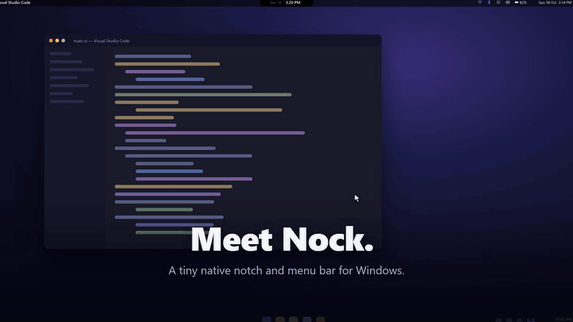

A notch for Windows,
in 1 MB of Rust
Media, timers, to-dos, clipboard history and Wi-Fi, Bluetooth and volume dropdowns, in a native notch and top bar. No Electron, no webview.
Download for Windows 10/11Free and open source (MIT). Installer or a single portable .exe.

What it does
Quick add, from anywherePress Ctrl+Alt+T, type a task, press Enter. You're back in your work before you forget it.
Focus timer in the notchOne click starts a timer on a task, and the countdown stays visible.
Everything in one panelMusic controls, clipboard history with search, system stats, pinned apps and a calendar.
Top bar with dropdownsJoin Wi-Fi, connect Bluetooth devices, set volume and brightness, check the battery.
Smart hintsLow battery, mic on, a copied link or code, a break after long sessions, and meeting countdowns.
Auto-hideKeep it out of sight until you touch the top edge, and it hides itself in full-screen games and video.
Light on purpose
~1 MBdownload
~0%CPU while idle
~32 MBmemory while idle
0webviews
Direct2D and DirectWrite draw into a layered window, and it only redraws when something changes. Check it yourself in Task Manager.
And a little life
A buddy lives on the bar and acts out a short scene every few minutes. Nothing runs between scenes.


About the Windows warning
Nock isn't code-signed yet, so Windows may show "Windows protected your PC" (choose More info, then Run anyway). A PC with Smart App Control on may block it outright. The source is public and the README explains the fix.